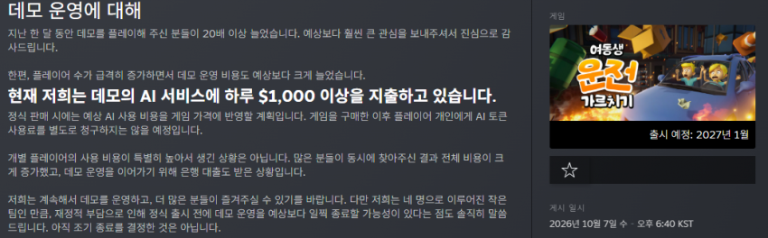
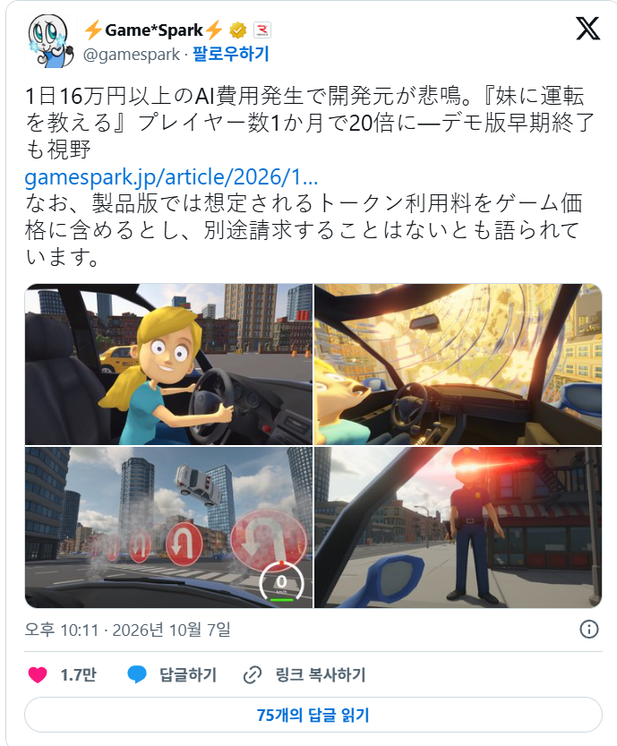

음성 인식으로 운전석의 여동생에게 운전을 가르치는 게임.
현재는 미출시 상태로, 데모는 공개되어 플레이 가능하다.
이전부터도 스트리머들이 꽤 해왔는데,
최근 홀로라이브에서도 다루는 등 더욱 인기가 늘었고, 그 결과....

https://store.steampowered.com/news/app/3948460/view/699903960312447039
데모 유지를 위해 매일 $1000 이상을 지출하는 상황이라고 한다...
은행 대출도 받았다고ㄷㄷ
아무튼 바이럴은 확실하게 됐음..
https://x.com/gamespark/status/2107821025513844811

참고로 (아트 스타일에서는 연상되지 않겠지만) 한국 개발팀임.
보면서 이가 쫙쫙 갈리더만ㅋㅋㅋ